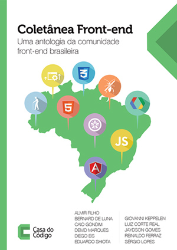

Dicas para desenvolver formulários "usáveis"
@deividmarques

Introdução
- Internet e seus usuários
- Importância de um formulário
- Usabilidade e Acessibilidade
- Boas práticas
- Validação
- Exemplo
Acesso a internet no Brasil
58% população
Portal Brasil - set/16
Formulários
- Entrar em contato
- Reclamação/sugestão
- Cadastro
- Compras
- Etc...
Compra online
Lei da Acessibilidade no Brasil
Segundo o decreto 5.296 de 2004 é obrigatória a Brasil acessibilidade em sites de administração pública.
Tipos de Leitores
- Jaws (pago)
- Voice Over (Nativo)
- NVDA (gratuito)
- Virtual Vision (gratuito)
- DosVox (pago)
- Chrome Vox (Extensão para o navegador)
Dicas
- Implementar acessibilidade no início do projeto
- Navegar pelo teclado
- Criar teclas de atalho para funcionalidades principais
- Página específica com detalhes das teclas de atalho. Twitter
- Cuidado com captcha!
- Testar em leitores de tela
- Testar com usuários reais
Boas práticas
- label/input
- alt em imagens
- Idioma na página
- Title na página
WAI-ARIA (Accessible Rich Internet Applications)
Define uma forma de tornar o conteúdo e aplicativos web mais acessíveis a pessoas com deficiências. Ele contribui especialmente com conteúdo dinâmico e interface de controles de usuário avançadas desenvolvidos com Ajax, HTML, JavaScript e tecnologias relacionadas.

Dica: focus() e show() no elemento
Mais exemplos
- aria-hidden="true" => Esconder elementos do leitor de tela
- aria-expanded="true/false" => Usado em collapses (elementos com toggle)
- role="menu-item" => Indica que o link faz parte de um menu
Mais exemplos
- aria-invalid="gramar/spelling/true"
gramar: erro de gramática,
spelling: erro de ortografia
true: erro de validação - role="dialog" => Usado em modais
- E muito mais
Teste com Leitor de Tela
Site
OBRIGADO

@deividmarques
github.com/deividmarques